Todos los artilamas

El Casino de la Atención
Visibiliza la economía de la atención mediante la metáfora del casino. Cada scroll y notificación tiene un costo real medible en tiempo y concentración.
Explorar →
Analizador de Sesgos en Búsquedas
Simula resultados de búsqueda evidenciando sesgos raciales y de género. Basado en la investigación de Safiya Noble sobre algoritmos de opresión.
Explorar →
Simulador de Desinformación
Simula la propagación de información verdadera y falsa en redes sociales. Experimenta con fact-checkers y alfabetización mediática en tiempo real.
Explorar →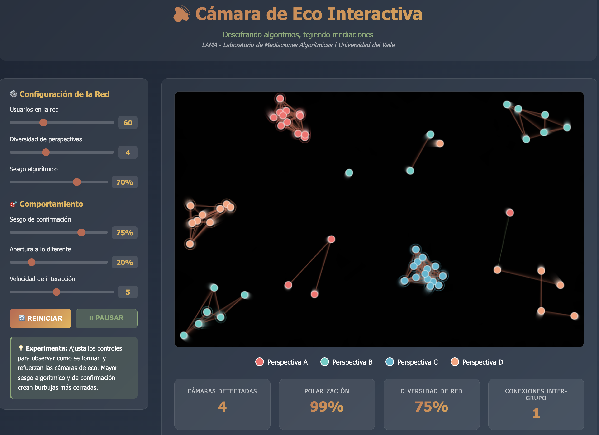
La Cámara de Eco
Demuestra cómo los algoritmos de recomendación crean burbujas de filtro que refuerzan las creencias existentes y limitan la exposición a perspectivas diversas.
Explorar →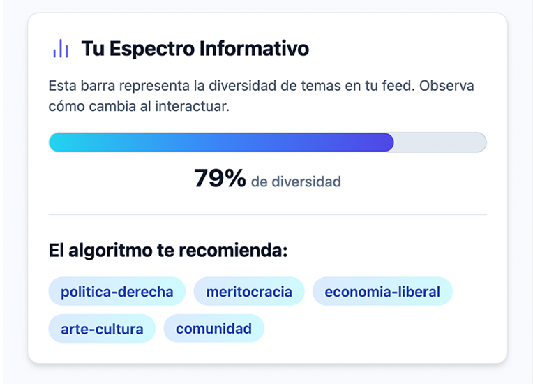
Tu Feed Personalizado
Explora cómo los algoritmos de recomendación construyen tu burbuja informativa. Cada interacción moldea lo que ves —y lo que nunca llegarás a ver.
Explorar →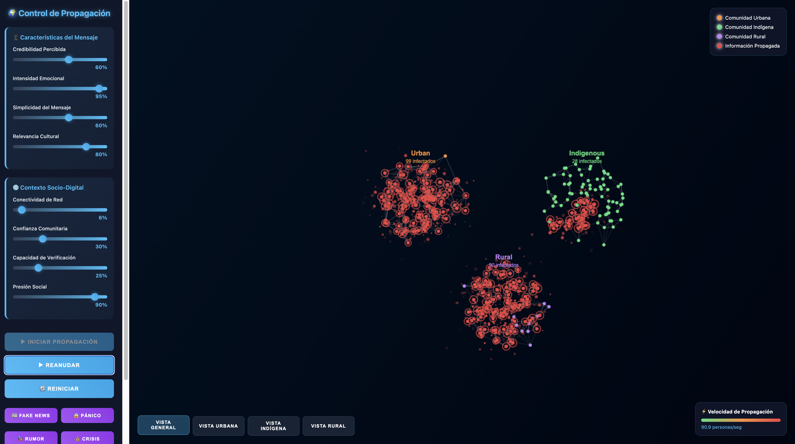
Viral por Grupos Sociales
Simulación de difusión viral segmentada por grupos sociodemográficos. El mismo contenido recorre trayectorias radicalmente distintas según el perfil del receptor.
Explorar →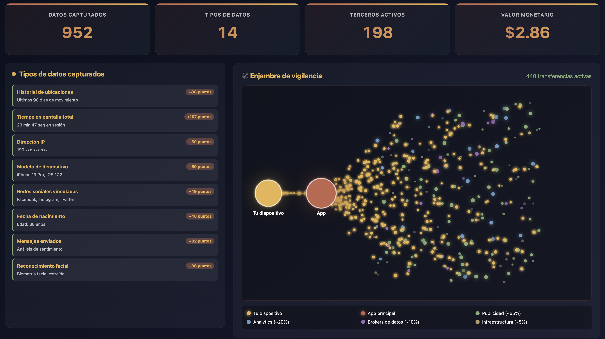
Enjambre de Datos Personal
Visualización del rastro de datos que dejamos en plataformas digitales. Materializa la magnitud de la información que cedemos con cada interacción cotidiana.
Explorar →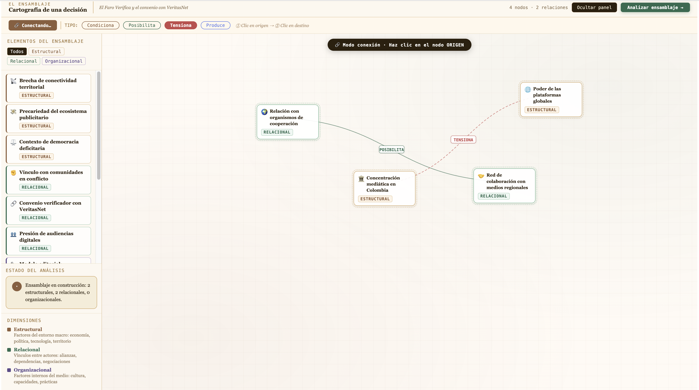
Ensamblaje Sociotécnico
Modelo de los actores humanos y técnicos que configuran las plataformas digitales. Revela que los algoritmos emergen de redes de decisiones, intereses y relaciones de poder.
Explorar →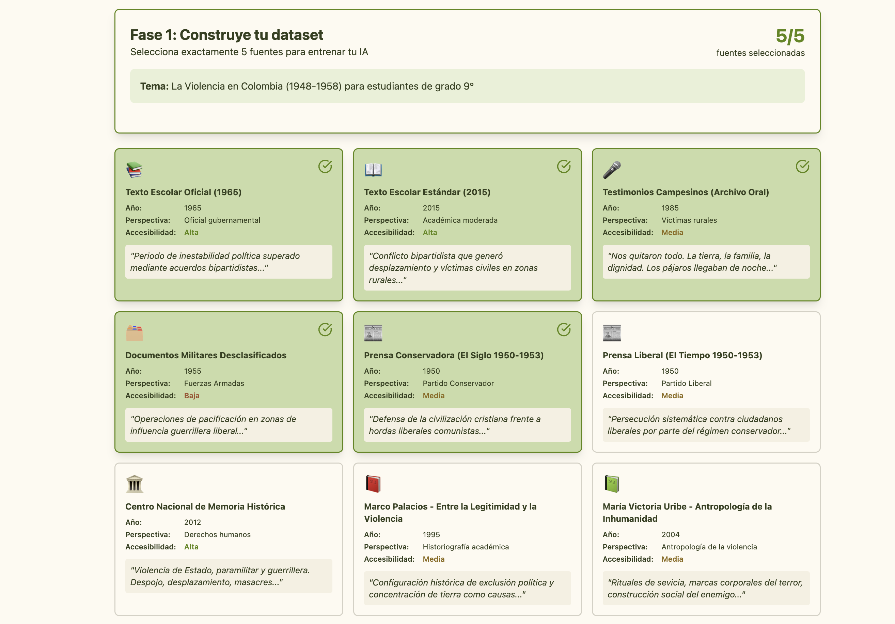
Sesgos en Narrativas Históricas
Simulador que revela cómo los sesgos algorítmicos distorsionan el relato histórico. Analiza qué voces amplifican los sistemas y cuáles silencian sistemáticamente.
Explorar →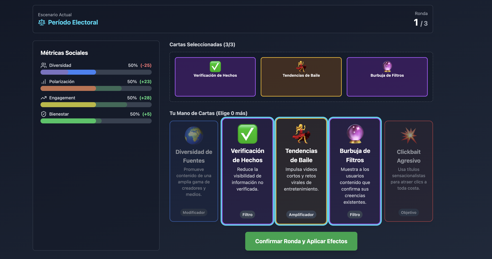
Algoritmos: El Juego de Cartas
Dinámica lúdica para comprender los algoritmos de recomendación. A través del juego, los participantes descubren qué contenidos se priorizan y cuáles desaparecen.
Explorar →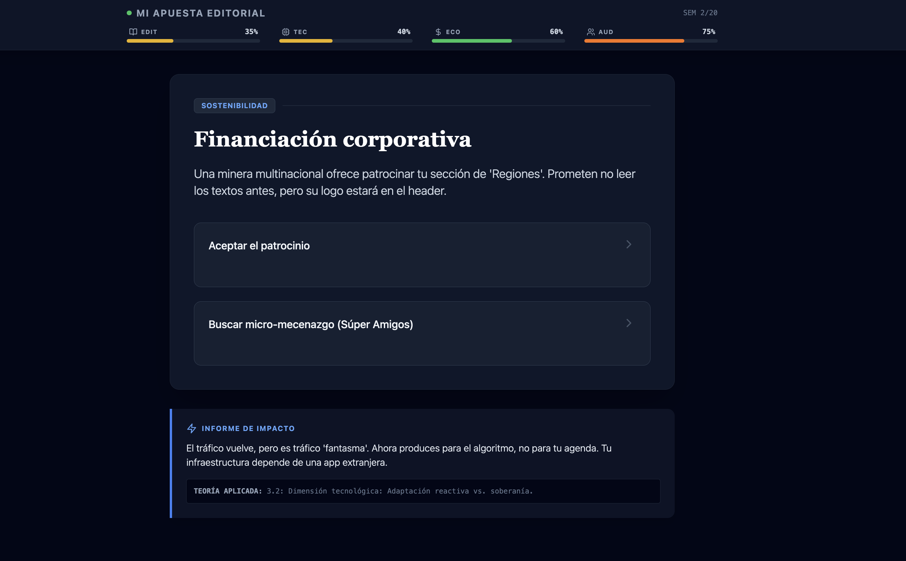
Mi Apuesta Editorial
Juego de decisiones sobre autonomía e independencia de medios digitales nativos. Explora las tensiones entre viabilidad económica, independencia editorial e integridad periodística.
Explorar →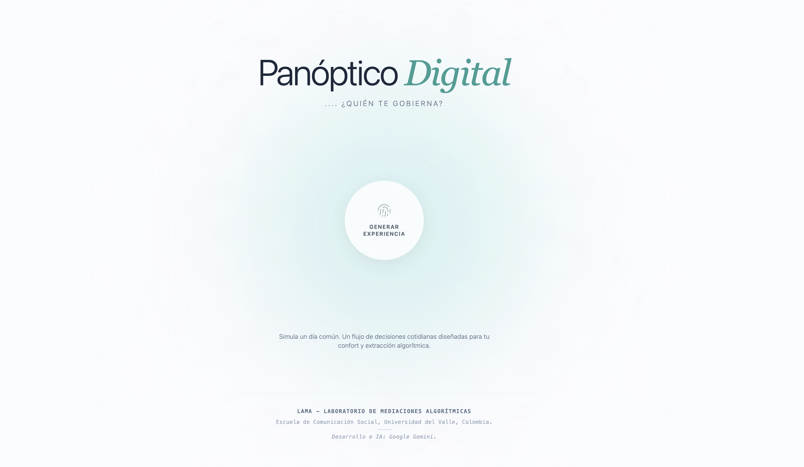
Panóptico Digital: ¿Quién te Gobierna?
Simulador que revela cómo los datos cotidianos construyen perfiles de vigilancia y poder. Hace tangible la forma en que el control se ejerce a través del conocimiento de nuestros comportamientos digitales.
Explorar →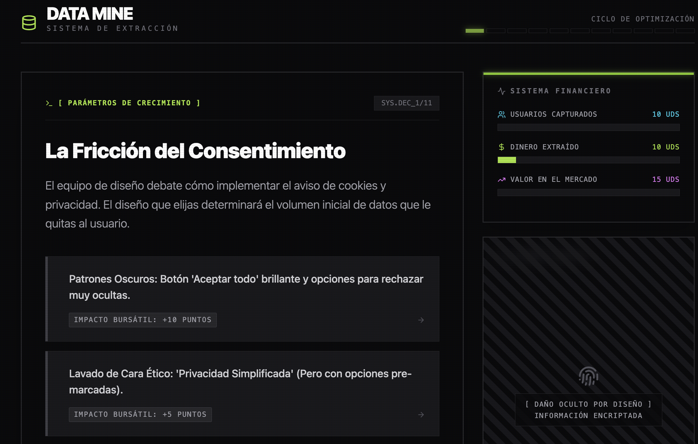
Data Mine: Economía de Datos
Juego de decisiones sobre extracción, comercio y ética de datos personales. Enfrenta a los participantes con las consecuencias reales del modelo de negocio que sustenta las plataformas digitales.
Explorar →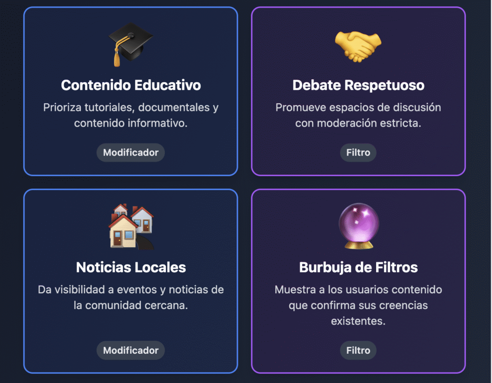
Si... Entonces: Genealogía de un Resultado Algorítmico
Reconstruye en 5 fases la desmonetización de un colectivo de comunicación comunitaria del Norte del Cauca. Disecciona el ensamblaje de nodos que produjeron el resultado y escribe tu propio peritaje sobre la responsabilidad distribuida.
Explorar →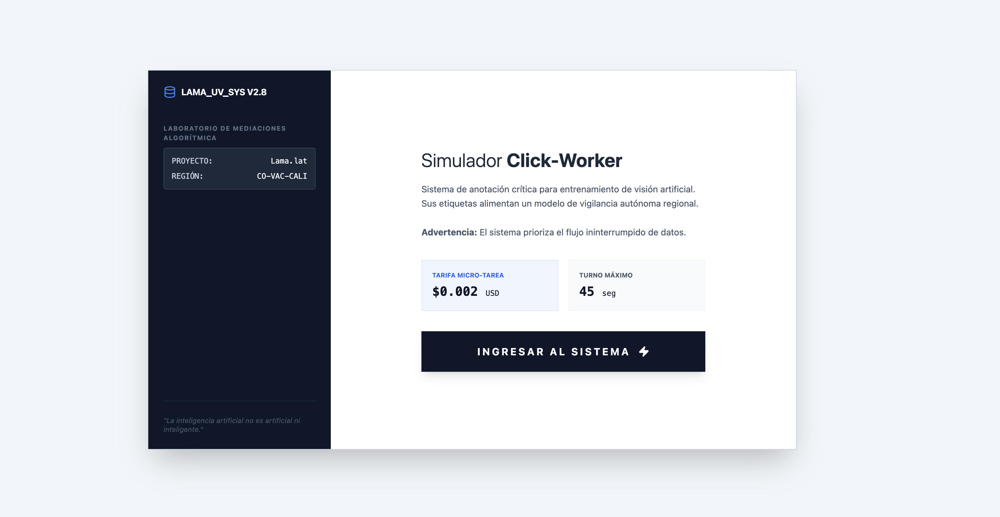
Simulador Click-Worker
Sistema de anotación crítica para entrenamiento de visión artificial. Sus etiquetas alimentan un modelo de vigilancia autónoma regional.
Próximamente